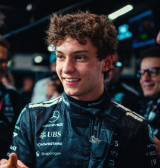

Andrea Kimi Antonelli
Andrea Kimi Antonelli
Team: Mercedes-AMG Petronas
Team Principal: Toto Wolff
Number: 12
Nationality: Italy
Debut: 2026
Born: 25 August 2006
History: Italian driver Andrea Kimi Antonelli entered Formula 1 as one of the most highly anticipated young talents in recent motorsport history. A product of the Mercedes junior program, Antonelli dominated multiple junior categories thanks to his aggressive yet controlled driving style and exceptional natural speed. Despite his young age, he quickly adapted to Formula 1 machinery and the pressures of competing at the highest level. By 2026, Antonelli was already viewed as a future championship contender and one of Italy’s brightest hopes since the Ferrari-dominated eras of the past.
